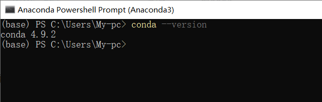
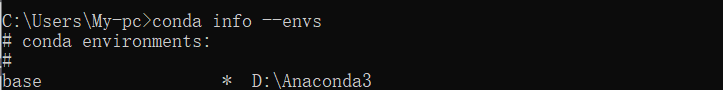
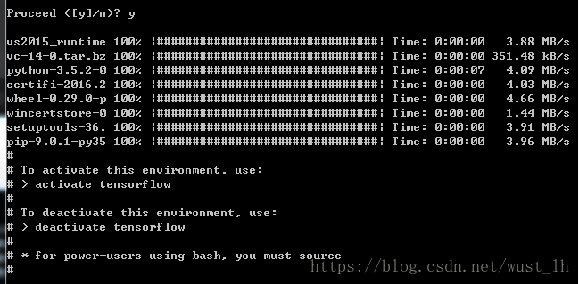
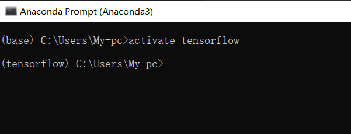
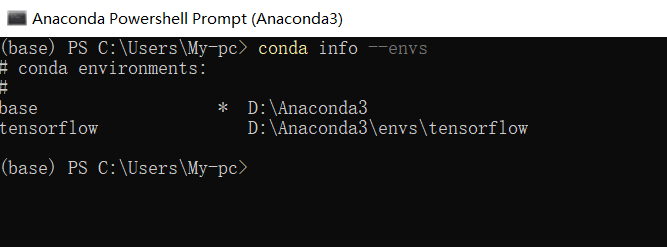
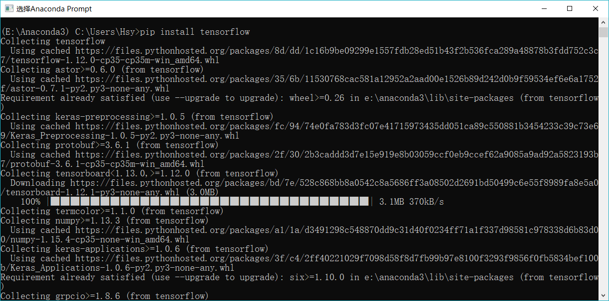
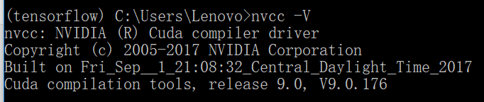
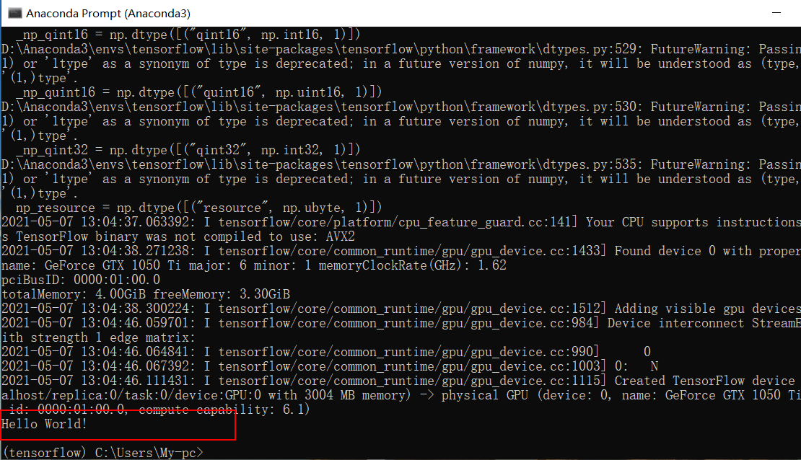
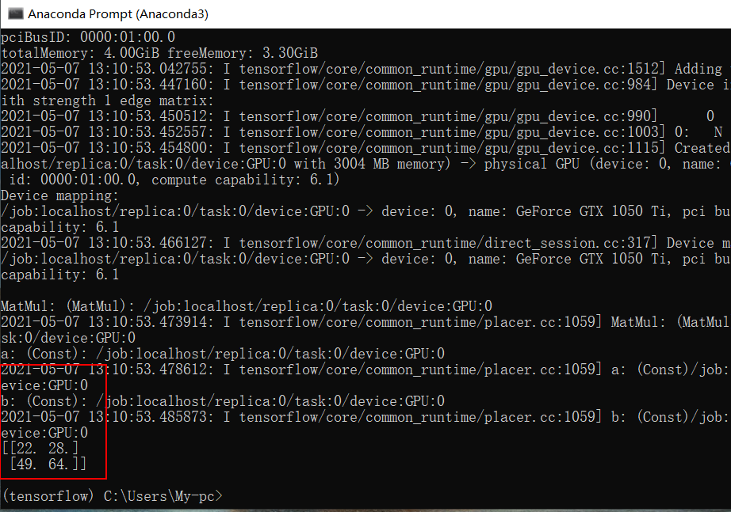

{{ value.name }}
TensorFlow是一个由Google开发的开源框架，是目前社区活跃度最高的深度学习框架之一。借助其灵活的架构，
用户可以轻松地将计算工作部署到多种平台（CPU、GPU、TPU）和设备（桌面设备、服务器集群、移动设备、边缘设备等）。
TensorFlow是采用数据流图（data flow graphs）来计算,所以首先我们得创建一个数据流流图,然后再将我们的数据（数据以张量(tensor)的形式存在）
放在数据流图中计算. 节点（Nodes）在图中表示数学操作,图中的边（edges）则表示在节点间相互联系的多维数据数组, 即张量（tensor)。训练模型时tensor
会不断的从数据流图中的一个节点flow到另一节点, 这就是TensorFlow名字的由来。
Keras 是一个用 Python 编写的高级神经网络 API，它能够以 TensorFlow, CNTK, 或者 Theano 作为后端运行。
Keras 的开发重点是支持快速的实验。能够以最小的时延把你的想法转换为实验结果，是做好研究的关键。
如果你想要入门深度学习，并取得初步成效，那么Keras将是你最好的选择。
由于TensorFlow的GPU版调用了NVINDA的通用并行计算架构，所以，如果你要安装GPU版，需要至少保证你的设备具有一个NVIDA出产的显卡。
GPU运行TensorFlow的好处是显而易见的，它不会影响你日常的电脑操作，且GPU和CPU版在深度学习方面的计算性能有明显差别（据说）。
Anaconda是一个用于科学计算的Python发行版，支持 Linux, Mac, Windows系统，提供了包管理与环境管理的功能，可以很方便地解决多版本python并存、切换以及
各种第三方包安装问题。Anaconda利用工具/命令conda来进行package和environment的管理，并且已经包含了Python和相关的配套工具。
下载完成之后打开，遇到不懂得就点下一步，最后一步，记得勾上第一个（添加环境变量 貌似英文是Add Path），尽管添加Anaconda环境变量会与
原有Python冲突，但不添加，接下来几步将难以继续。
自认为成功安装后，按以下几步检验是否安装（在命令提示器中进行）
1.检查Anaconda是否成功安装：
conda --version

2.检测目前安装了哪些环境：
conda info --envs

失败主要是第一步，如果第一步没有成功，说明你没有添加环境变量，如果你确定你已经添加了环境变量，依然失败，请以管理员权限再运行，如果还是不行，请重装或自行上网寻找解决办法
上一步成功后，就要进入Anaconda Prompt安装TensorFlow
conda create --name tensorflow python=3.6.13

4.激活环境
activate tensorflow

5.tensorflow环境被成功添加
conda info --envs

使用pip安装tensorflow
pip install tensorflow==1.13.1 -i https://pypi.tuna.tsinghua.edu.cn/simple some-package

1.先安装CUDA
点击下载 CUDA 10.0 版
安装成功后，在Tensorflow环境下输入命令
nvcc -V

3.下载CUDNN后,复制粘贴cuDNN里面的下面三个文件到CUDA的相应同名文件
cudnn\cuda\bin => CUDA\v10.0\bin
cudnn\cuda\include => CUDA\v10.0\include
cudnn\lib\x64 => CUDA\v10.0\lib\x64
pip install tensorflow_gpu==1.13.1 -i https://pypi.tuna.tsinghua.edu.cn/simple some-package
import tensorflow as tf
hello_constant = tf.constant('Hello World!')
with tf.Session() as sess:
output = sess.run(hello_constant)
print(output.decode())

如果安装的是GPU版请使用下面的程序
import tensorflow as tf
a = tf.constant([1.0, 2.0, 3.0, 4.0, 5.0, 6.0], shape=[2, 3], name='a')
b = tf.constant([1.0, 2.0, 3.0, 4.0, 5.0, 6.0], shape=[3, 2], name='b')
c = tf.matmul(a, b)
sess = tf.Session(config=tf.ConfigProto(log_device_placement=True))
print(sess.run(c)))

点击下载 test.py
点击下载 test_gpu.py
测试过程如下：
1.确保自己是Tensorflow环境
2.如果是复制代码，输入python后回车，再把复制过后的代码粘贴进去后回车
3.如果是使用.py文件，输入python后敲一个空格，并把文件拖到Anaconda Prompt窗口，之后回车
1.Anaconda Prompt 和 Anaconda Powershell Prompt不一样，不能在Anaconda Powershell Prompt装tensorflow
2.不要在命令提示器里装tensorflow
3.安装过程有点warnning是正常的，至于原因，那就太多了，需要复制报错，自己去查
4.python的报错只需要复制最后一段，其他的你随意